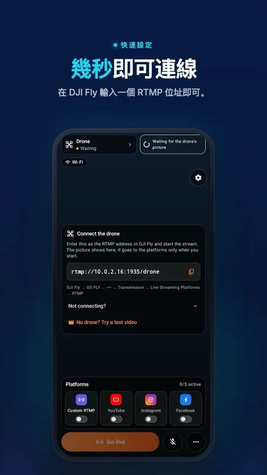
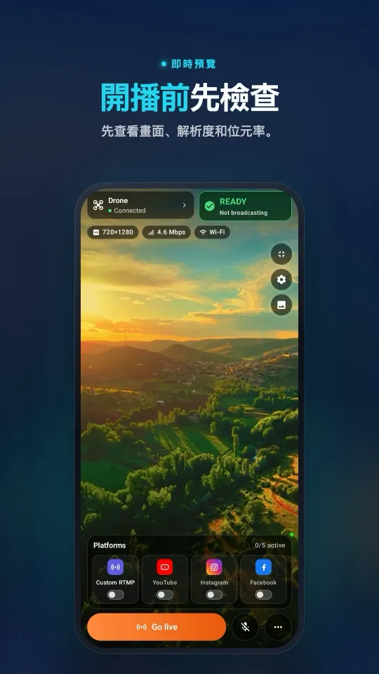
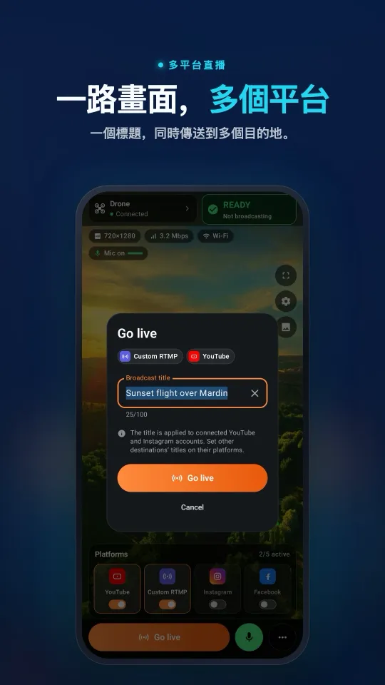
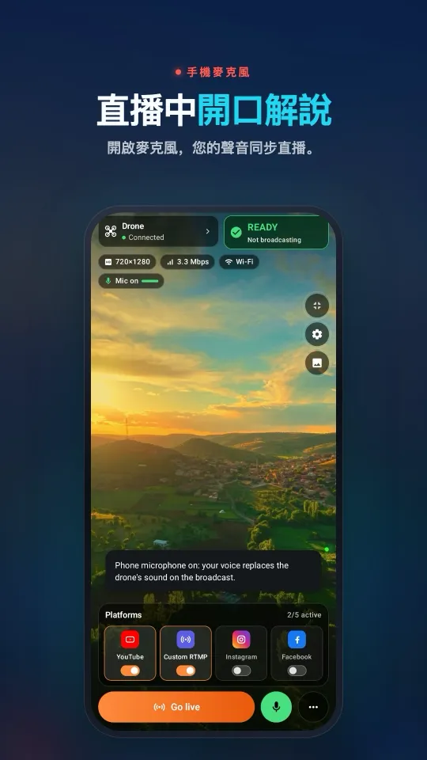
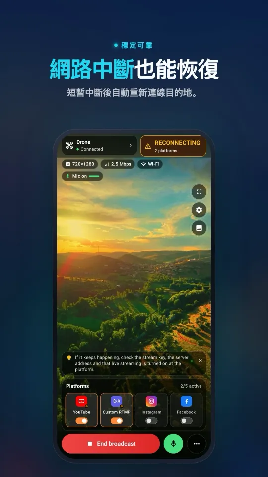

DJI Mavic 3、Classic 或 Pro 怎麼直播
DJI Mavic 3 系列可以透過 DJI Fly 送出即時相機畫面，但能用哪種做法取決於遙控器。RC-N1 搭配飛行用手機，並由電腦接收；RC Pro 則搭配另一支執行 Stream My Drone 的手機。帶螢幕的 DJI RC 情況不同：DJI 不支援用它直播。
RC 2 上 DJI Fly 要求接麥克風、無法開始直播？ 不買麥克風也能解決 →
重點整理
- 本文涵蓋消費級的 Mavic 3、Mavic 3 Cine、Mavic 3 Classic 和 Mavic 3 Pro 系列，不包括 Mavic 3 Enterprise。
- RC-N1 要用手機執行 DJI Fly；電腦流程把接收工作交給另一台電腦。
- RC Pro 可以把 RTMP 送到另一支手機上的 Stream My Drone，或電腦上的 Stream My Drone。
- DJI RC 可以用來飛行，但不支援 DJI Fly 直播。
- 請檢查 RTMP 串流本身：相機錄影畫質和遙控器的即時畫面，都不代表直播解析度。
同時確認飛機和遙控器
消費級系列方面，DJI 在 Mavic 3 Pro 支援常見問題中列出 RC-N1、DJI RC 和 DJI RC Pro。Mavic 3 Classic 支援頁面同樣列出這三款。初代 Mavic 3 支援資料列出 RC-N1 和 RC Pro；DJI RC 常見問題也確認 DJI RC 相容於 Mavic 3 和 Mavic 3 Cine。這些是飛行相容性的資訊，並不保證每款遙控器都能直播。
| 遙控器 | DJI Fly 在哪裡執行 | 直播做法 |
|---|---|---|
| DJI RC-N1 | 以 USB 連接的手機 | 從那支手機以 RTMP 送到電腦上的 Stream My Drone |
| DJI RC Pro | 遙控器內建螢幕 | 以 RTMP 送到另一支執行 Stream My Drone 的手機，或送到電腦 |
| DJI RC | 遙控器內建螢幕 | 不支援 DJI Fly 直播 |
請不要把 DJI RC 和 RC 2、RC Pro 和 RC Pro 2 搞混。Mavic 4 Pro 的遙控器流程，並不代表也相容於 Mavic 3。Mavic 3 Enterprise 和 Thermal 機型使用另一套產品與 App 流程，不在本文範圍內。
在你自己的軟體上確認 RTMP 選單和音訊
使用支援直播的遙控器時，完成飛機對頻並打開 DJI Fly 的相機畫面。到 GO FLY → ••• → Transmission → Live Streaming Platforms → RTMP 底下找找看。必要時更新飛機、遙控器和 DJI Fly，規劃直播活動前再確認一次選單。
DJI 的直播說明指出，RC Pro 從 DJI Fly v1.16.0 起需要接上麥克風；RC Pro 搭配 Fly v1.18.0 或更新版本時，RTMP 只支援 720p。RC-N1 則取決於所接手機上可用的設定。請實際確認這些設定，不要照抄舊的 1080p 教學。
在手機上的樣子從連接 DJI Fly 到多平台同時直播，一個畫面全部搞定。




Mavic 3 搭配 RC Pro：用手機接收串流
- 在另一支手機上安裝 Stream My Drone從 Google Play 或 App Store 下載。讓 DJI Fly 在 RC Pro 上保持開啟；手機負責接收並轉送影像。
- 讓遙控器和接收端連上同一個網路使用可以上網的 Wi-Fi。在戶外時，負責接收的 Android 手機也可以同時開熱點。選好網路後再開啟 Stream My Drone，在 iPhone 上系統詢問時請允許存取區域網路。換了網路的話，請再確認一次顯示的位址。
- 在 DJI Fly 中輸入接收位址複製 Stream My Drone 顯示的完整本機 RTMP 位址。在 DJI Fly 中打開 GO FLY → ••• → Transmission → Live Streaming Platforms → RTMP。請依你的版本上的欄位名稱填寫：要求分開填位址和金鑰的畫面，和要求填完整 RTMP 網址的畫面並不一樣。不要把 YouTube 或 Instagram 的金鑰加到本機接收位址裡。選單的詳細步驟請見 DJI Fly RTMP 教學。
- 開始本機串流並檢查聲音在 DJI Fly 中開始直播，確認 Stream My Drone 中出現會動的畫面。地面測試時，檢查遙控器上選擇的麥克風，並到平台上聽聽聲音。有畫面卻沒有可用的聲音，在起飛前比較容易找出原因。
- 加入直播目的地並開播平台有提供帳號連結時就直接連結，否則在 Stream My Drone 中填入目前的伺服器網址和串流金鑰。開始轉送並打開平台後台。如果另外需要按「開始直播」，請完成這一步，再確認實際的觀看頁面正常。
負責接收的手機是和遙控器分開的另一個裝置。手機版轉送時會保留收到的影像原樣；預覽的裁切或模糊背景，並不會產生新的直向直播。在 iPhone 上，設定期間請讓 App 保持開啟；要在背景持續接收，需要靠子母畫面。
Mavic 3 搭配 RC-N1：用另一台電腦接收
使用 RC-N1 時，讓 DJI Fly 在以 USB 連接遙控器的手機上保持開啟。RC Pro 也可以送到這個電腦接收端。在 Mac 或 Windows 電腦上安裝 Stream My Drone。電腦透過區域網路接收 DJI Fly 的 RTMP 串流；這個做法不需要 HDMI 擷取，也不需要從遙控器以 USB 網路攝影機的方式連接。
- 複製電腦的本機 RTMP 位址讓電腦和執行 DJI Fly 的裝置連上同一個網路。在 Stream My Drone 中，複製「連接無人機」下方的位址。
rtmp://192.168.1.20:1935/drone只是範例，請使用 App 實際顯示的位址。 - 送出串流並確認已收到在 DJI Fly 中輸入這個本機位址並開始串流。如果防火牆詢問，請允許 App 在私人網路上接收連線。設定平台之前，先確認預覽畫面在動。
- 選擇輸出並啟動直播目的地選擇橫向或電腦版的直向版面，再加入平台的伺服器網址和金鑰。開始輸出，確認平台有收到，並完成平台的開播步驟。若要同時送到多個目的地，啟用前請先確認合計需要的上傳頻寬。

直播到 YouTube、Instagram、Facebook 或 TikTok
| 直播目的地 | 需要什麼 | 教學 |
|---|---|---|
| YouTube | 已開通直播權限，並建立好一場直播 | YouTube 設定 |
| 可使用 Live Producer，以及目前有效的 RTMPS 憑證 | Instagram 設定 | |
| 建立好的直播及其伺服器網址與金鑰 | Facebook 設定 | |
| TikTok | 帳號具備 RTMP 權限，或可在電腦上使用 LIVE Studio | TikTok 設定 |
帳號是否符合資格由平台決定。兩個 App 都不會提供串流金鑰，也無法繞過權限要求。若要在相容的直播軟體中使用電腦流程，Stream My Drone 也提供虛擬攝影機。本機預覽只證明已收到畫面；觀看頁面正常，才代表已經開播。
觀眾實際會收到什麼解析度？
Mavic 3 系列的高解析度相機錄影和 O3+ 遙控器畫面，都和 RTMP 編碼器的輸出無關。編碼器沒送出的細節，接收端也無法還原。請檢查收到的影片尺寸和目的地的播放畫質，不要把飛機的錄影規格當成直播規格來宣傳。
這一點對擁有多顆鏡頭的 Mavic 3 Pro 特別重要：開播前，請在接收端測試你打算使用的鏡頭和構圖。改變相機或錄影設定，不能代替檢查送出的串流。若目的地需要直向畫面，Stream My Drone 電腦版可以把畫面裁切或縮放成直向輸出；手機版則會原樣轉送收到的影像。
- 把本機接收和網路上傳分開看。遙控器必須透過區域網路連到接收端，而接收端也必須有足夠的上傳頻寬供應各個目的地。
- 把上傳需求加總計算。兩路 5 Mbps 的目的地輸出合計需要約 10 Mbps 上傳頻寬，每小時約用掉 4.5 GB，還不含額外負擔。測試時先從一個目的地開始。
- 除了看，也要聽。檢查遙控器或飛行手機上選擇的麥克風，再到平台上聽聽看。不要以為飛機的相機畫面會附帶有用的機上聲音。
Mavic 3、Classic 與 Pro 直播疑難排解
- DJI RC 沒有 RTMP 選單：這是官方記載的限制，即使這款遙控器能操控你的飛機也一樣。Stream My Drone 無法讓 DJI RC 具備直播功能。若要採用本文流程，請使用相容的 RC-N1 或 RC Pro。
- RC Pro 無法開始直播：檢查麥克風連接和 DJI Fly 的提示，再確認目前的 RTMP 設定。
- RC-N1 的手機斷線：先確認 DJI Fly 仍顯示飛機已連線，並檢查 USB 線，再排查接收端。
- 連不到接收端：網路有任何變更後，請重新複製目前的本機位址。避免使用有裝置隔離的訪客 Wi-Fi，並檢查電腦的防火牆。在飛行裝置上填
localhost指的是該裝置自己。 - 有收到畫面，卻沒人看得到：開始輸出到目的地，確認目前的平台憑證，並完成平台的開播步驟。光有接收端預覽，並不會讓直播公開。
官方參考資料與下一步
查核日期為 2026 年 10 月 25 日：機型與遙控器差異參考 Mavic 3 Pro 支援、Mavic 3 Classic 支援、初代 Mavic 3 支援和 DJI RC 常見問題；直播支援與限制參考 DJI Fly 直播操作指南。實際可用的選單，請以你的飛機和遙控器韌體為準。
新一代機型請看 Mavic 4 Pro 直播教學。想要更輕巧的帶螢幕遙控器組合，請見 Mini 5 Pro。若要發布到多個目的地，請接著看多平台同時直播教學。
常見問題
Mavic 3 Pro 能用部分套裝附的 DJI RC 直播嗎？
DJI RC 可以操控 Mavic 3 Pro，但 DJI 不支援用這款遙控器直播。若要採用本文的 RTMP 流程，請使用相容的 RC-N1 搭配飛行手機，或相容的 RC Pro。
本文也適用於 Mavic 3 Classic 和 Mavic 3 Cine 嗎？
是的，適用於上面說明的消費級機型和相容的遙控器組合。不包括另成一套的 Mavic 3 Enterprise 或 Thermal 流程。
不用電腦，可以用手機接收 RC Pro 的串流嗎？
可以在同一個區域網路上的另一支手機使用 Stream My Drone，同時讓 DJI Fly 在 RC Pro 上保持開啟。把 App 的接收位址填入 DJI Fly，並在 Stream My Drone 中設定直播平台。
RC-N1 的飛行手機能同時當接收端嗎？
那支手機已經在執行 DJI Fly 來飛行。本文用另一台電腦上的 Stream My Drone 接收，讓飛行 App 可以一直開著；我們不假設同一支手機能同時應付飛行和轉播兩個 App。
為什麼舊的 RC Pro 教學顯示的解析度比較高？
DJI Fly 的功能會隨軟體版本改變。請確認遙控器目前的設定和官方直播說明，再檢查實際收到的影片，不要依賴錄影規格或舊教學。
平台的串流金鑰要填在 DJI Fly 裡嗎？
在這種轉播設定中，DJI Fly 裡填的是 Stream My Drone（手機或電腦版）顯示的本機位址。平台的伺服器網址和串流金鑰，則填在接收端 App 的目的地設定裡。
用手機讓無人機直播
Android 與 iPhone 版 Stream My Drone 接收 DJI Fly 畫面，並同時推送到 YouTube、Instagram、Facebook、TikTok、Twitch、Kick 或你自己的伺服器。一次性購買，無訂閱。

更多教學
DJI RC 2 不接麥克風無法直播？「No built-in mic in current device」的解決方法
DJI Fly 1.16 起，RC 2 不接麥克風就無法開始直播。本文說明原因、可行的做法（USB-C 麥克風、AirPods），以及用一支 Android 手機、不需額外設備的解決方式。
DJI Flip 怎麼直播
用 RC 2、RC-N3 或 RC-N2 讓 DJI Flip 直播：手機與電腦 RTMP 設定、手掌操控與手機直連的差別、直向構圖和平台檢查。
DJI Lito X1 怎麼直播
用 RC 2、RC-N3 或 RC-N2 讓 DJI Lito X1 直播：DJI Fly RTMP 設定、手機與電腦操作流程、直播平台設定，以及實用的疑難排解。
DJI Lito 1 怎麼直播
用 RC 2、RC-N3 或 RC-N2 讓 DJI Lito 1 直播：DJI Fly RTMP 設定、手機與電腦操作流程、直播平台設定，以及實用的疑難排解。
DJI Air 3S 怎麼直播
把 DJI Air 3S 直播到 YouTube、Instagram 或 Facebook。選擇遙控器，把 DJI Fly RTMP 接到手機或電腦，並檢查送出的畫面。
DJI Air 3 怎麼直播
把 DJI Air 3 直播到 YouTube、Instagram 或 Facebook。選擇遙控器，把 DJI Fly RTMP 接到手機或電腦，並檢查送出的畫面。
DJI Mavic 4 Pro 怎麼直播
用 RC 2 或 RC Pro 2 把 DJI Mavic 4 Pro 畫面送到手機或電腦直播。確認 DJI Fly RTMP、麥克風差異、720p 上限和平台設定。
DJI Mini 3 Pro 怎麼直播
用 RC-N1、手機上的 DJI Fly 和電腦上的 Stream My Drone，讓 DJI Mini 3 Pro 直播。了解初代 DJI RC 為何無法使用這種 RTMP 做法。
DJI Mini 3 怎麼直播
透過 RC-N1 和 DJI Fly，把 DJI Mini 3 直播送到電腦上的 Stream My Drone。確認 DJI RC 的限制、720p 即時畫面畫質和平台開播步驟。
DJI Mini 5 Pro 如何直播
用 RC 2 或 RC-N3 讓 DJI Mini 5 Pro 直播：設定 DJI Fly RTMP，以手機或電腦接收，再把空拍畫面送到 YouTube、Instagram 或 Facebook。
DJI Mini 4 Pro 如何直播
用 RC 2 或 RC-N2 讓 DJI Mini 4 Pro 直播：手機與電腦的設定步驟、DJI Fly RTMP 選項、麥克風需求，以及在平台上要確認的事項。
從 DJI 空拍機即時辨識並清點動物
Stream My Drone 能在空拍機的即時畫面中找出山羊、綿羊、牛、馬、驢和家禽，在直播上標示並計數，全部在你自己的電腦上執行。
DJI Fly RTMP 直播：完整設定教學
如何在 DJI Fly 設定 RTMP 直播：設定在哪裡、要輸入哪個位址、遙控器和電腦怎麼連網，以及出問題時怎麼解決。
DJI Fly 為什麼無法直播到 Instagram（以及解決方法）
DJI Fly 沒有 Instagram 選項，它的 RTMP 用戶端也無法建立 Instagram 要求的加密 RTMPS 連線。本文說明原因，以及如何照樣用 DJI 空拍機開 Instagram 直播。
把 DJI 空拍機變成電腦的網路攝影機
用 Stream My Drone 虛擬攝影機，把 DJI 空拍機變成 TikTok LIVE Studio、OBS、Zoom、Google Meet 或 Teams 的網路攝影機。設定步驟、應用點子與問題排除。
DJI Neo 如何直播
DJI Neo 如何直播：哪種操控模式可以用（手機、RC-N3、飛行眼鏡）、DJI Fly 的 RTMP 設定，以及用 Stream My Drone 直播到 Instagram、TikTok 或 YouTube。
DJI Avata 2 如何直播
如何直播 DJI Avata 2 的 FPV 畫面：把 Goggles 3 的畫面分享到手機上的 DJI Fly，透過 RTMP 串流，再直播到 Instagram、TikTok 或 YouTube。
把 DJI Osmo 相機直播到 Instagram、TikTok 等平台
DJI Mimo 能讓 Osmo Action、Osmo Pocket 和 Osmo 360 透過 RTMP 直播。把串流送到 Stream My Drone，就能同時直播到 Instagram、TikTok 和 YouTube。
Osmo Pocket 3 如何直播到 Instagram 和 TikTok
如何用 Stream My Drone，把 DJI Osmo Pocket 3 從 DJI Mimo 以 RTMP 同時直播到 Instagram、TikTok 和 YouTube，並當成無線網路攝影機使用。
Osmo Action 運動相機如何直播到 Instagram 和 TikTok
用 Stream My Drone，把 DJI Osmo Action 6、5 Pro、4 或 3 從 DJI Mimo 以 RTMP 同時直播到 Instagram、TikTok、YouTube 和 Twitch。設定步驟與建議參數。
如何用 DJI 空拍機開 TikTok 直播
從 DJI Fly 把 DJI 空拍機直播到 TikTok：有 TikTok 串流金鑰可直接開播，沒有金鑰則透過 TikTok LIVE Studio 和虛擬攝影機。建議設定與問題排除。
如何用 DJI 空拍機開 Instagram 直播
用 DJI 空拍機開 Instagram 直播：在 instagram.com 取得串流網址和金鑰，透過 Stream My Drone 轉送 DJI Fly 的 RTMP 串流，最後按下開始直播。
如何把 DJI 空拍機直播到 YouTube
把 DJI 空拍機直播到 YouTube：開通直播功能，從 YouTube 工作室複製串流金鑰，再透過 Stream My Drone 轉送 DJI Fly 的 RTMP。建議設定與小技巧。
如何用 DJI 空拍機開 Facebook 直播
用 DJI 空拍機開 Facebook 直播：從 Live Producer 取得 RTMPS 伺服器網址和串流金鑰，透過 Stream My Drone 轉送 DJI Fly 的串流，然後開播。
如何在 Twitch 直播 DJI 空拍機
在 Twitch 直播 DJI 空拍機：從創作者後台複製串流金鑰，在 Stream My Drone 中把 Twitch 加為自訂 RTMP 目的地，然後開始直播。
如何在 Kick 直播 DJI 空拍機
在 Kick 直播 DJI 空拍機：從 Kick 後台複製串流網址和金鑰，在 Stream My Drone 中加為自訂 RTMP 目的地，然後開始直播。
把 DJI 空拍機同時直播到多個平台
用 Stream My Drone，把一路 DJI 空拍機直播同時送到 TikTok、Instagram、YouTube、Facebook、Twitch 和 Kick，免費、在本機執行，不需要轉播服務。
Stream My Drone 與 Restream：空拍機直播該選哪一個？
要把 DJI 空拍機直播到多個平台，該用 Restream 的雲端轉播，還是在自己電腦上執行的 Stream My Drone？費用、浮水印、Instagram、直向影片，以及各自適合的情況。
不用架設 NGINX 和 OBS 也能直播 DJI 空拍機
要把 DJI Fly 畫面接進 OBS，常見做法是架 NGINX RTMP 伺服器、改設定檔、加媒體來源。本文說明這套流程要做哪些事，以及只用一個 App 就能省略它的方法。